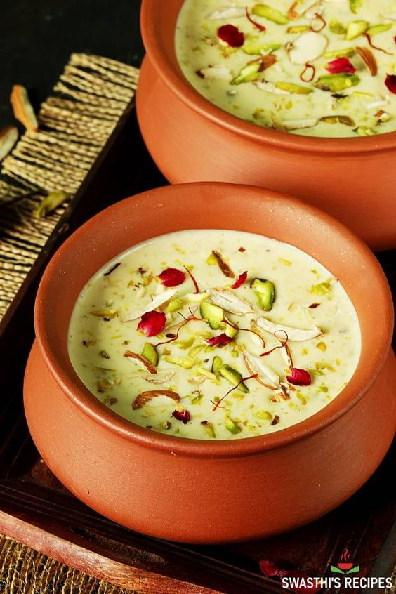
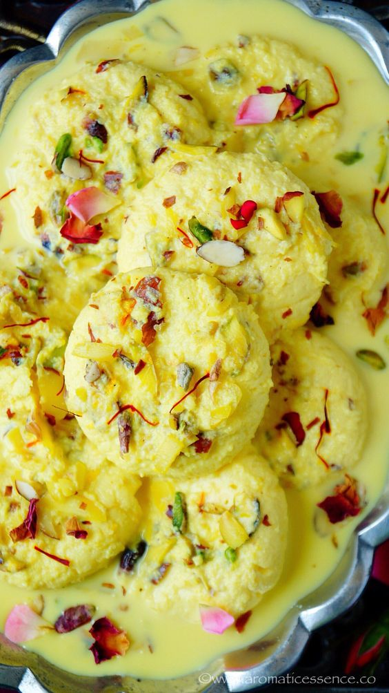
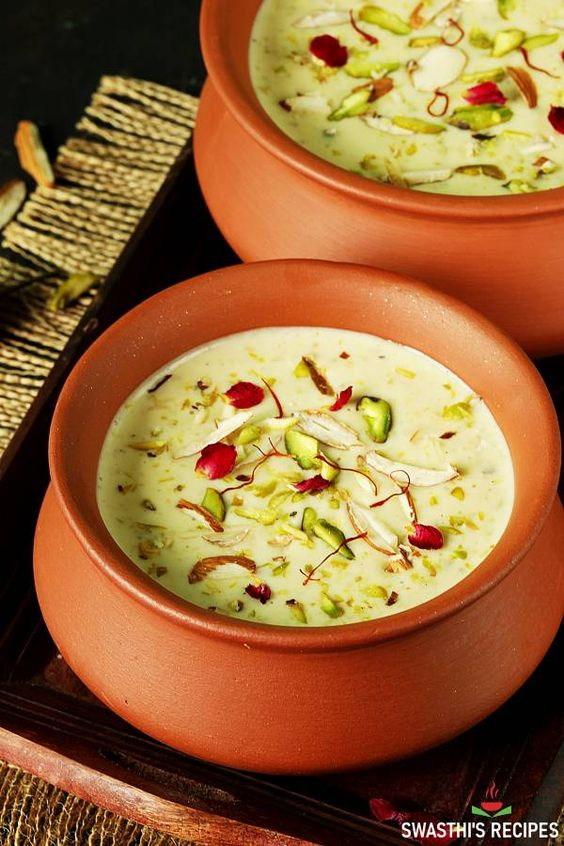
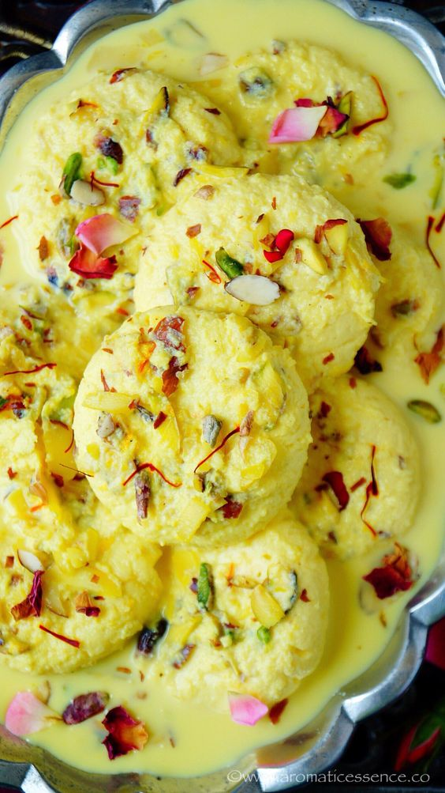
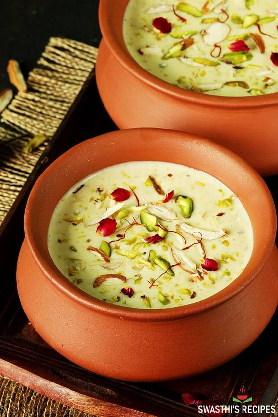
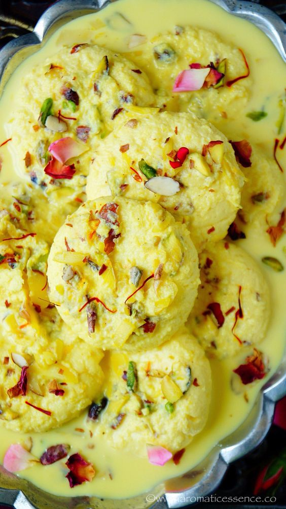
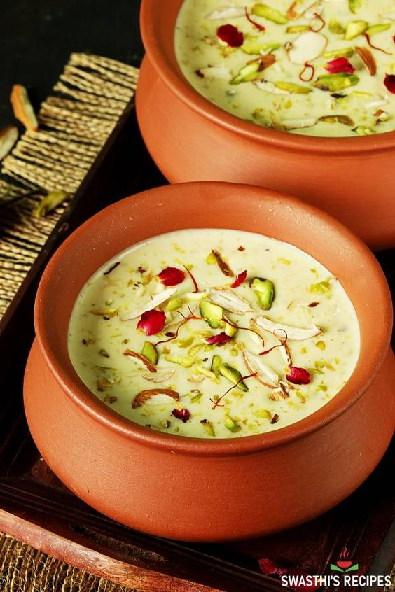
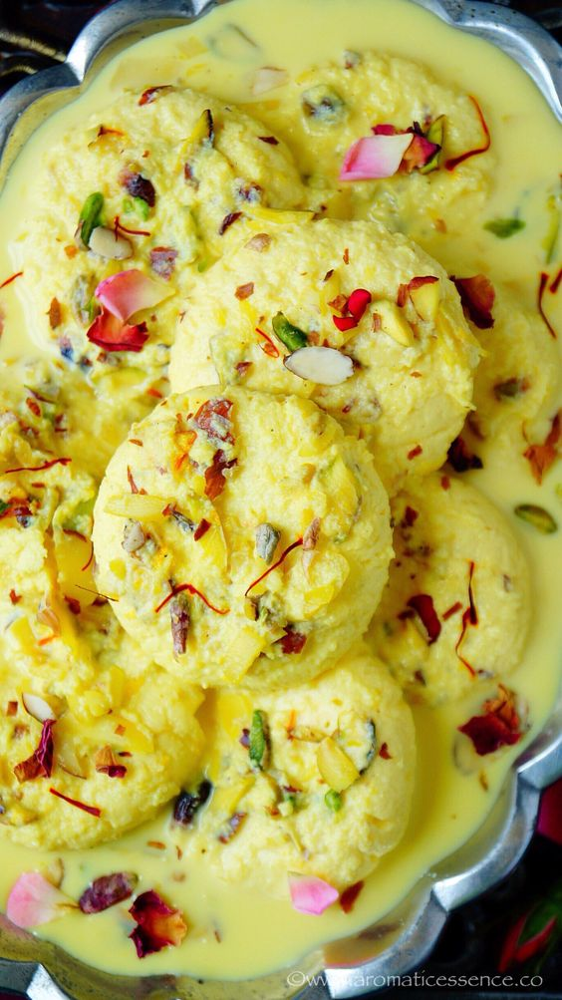

 



Fruit custard is a popular dessert made with fresh fruits and custard. Serve it as chilled dessert with your favorite fruits.
Rabdi is a traditional North Indian dessert made by simmering full fat milk until it reaches a thick consistency. It is sweetened with sugar & flavored with saffron and cardamoms. It can be eaten on its own or serve with gulab jamun, jalebi or malpua.
Rasmalai | Rossomalai | Rosh molai, the popular dessert from Bengal, India, is a heavenly treat that is sure to tantalize your taste buds! Here's an easy rasmalai recipe with all the tips and tricks to make soft rasmalai at home!
Wall's Paddle Pop Vanilla Cup Royal Falooda is a delicious and yummy beverage dessert to freshen you up on these hot summer days. Treat your sweet tooth with this unique creamy notion. Give this Royal Falooda with Wall's Paddle Pop Vanilla Cup a try and let us know how it turns out.
The Filipino dessert layers shaved ice and condensed milk on top of all sorts of texturally contrasting ingredients for a deliciously chewy, crunchy, creamy, sticky, and refreshing result.
Indian Ice Cream Kulfi. Holi Special.Thandai kulfi Recipe to prepare Kulfi that's a rich milk based creamy frozen dessert on a stick